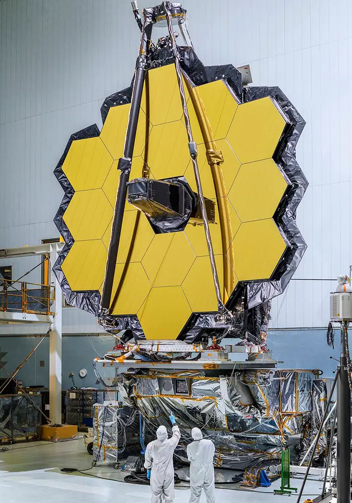
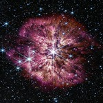
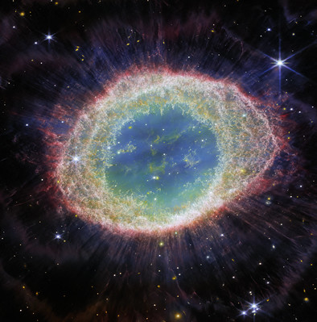
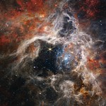
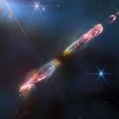
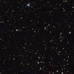
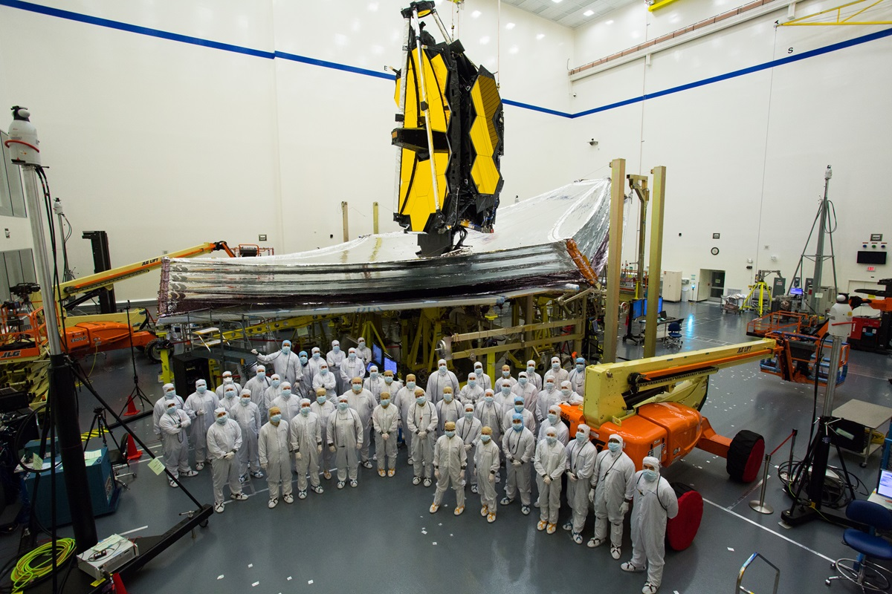
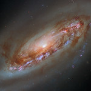
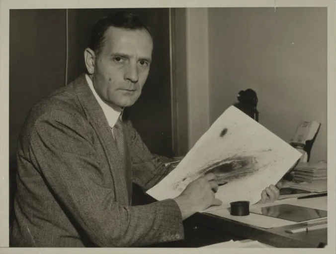

NASA, the United States government agency responsible for the civilian space program, has been a leader in space exploration since its founding in 1958. From the Apollo missions to Mars exploration, NASA has made incredible contributions to our understanding of the universe.
James Webb Telescope
The James Webb Space Telescope (JWST) is a specialized space telescope designed for infrared astronomy. As the largest telescope currently operational, it boasts advanced instruments that offer high-resolution and high-sensitivity capabilities. This allows it to observe objects that are too distant, ancient, or faint for the Hubble Space Telescope. Consequently, JWST enables researchers to conduct investigations in various fields of astronomy and cosmology, including the study of the earliest stars and the formation of the first galaxies, as well as detailed atmospheric analysis of potentially habitable exoplanets.

James Webb Photos





Team
As the prime contractor to develop the James Webb Space Telescope, Northrop Grumman designed and built the deployable sunshield, provided the spacecraft and integrated the total system. The observatory subsystems were developed by a Northrop Grumman-led team with vast experience in developing space-based observatories.

James Webb Telescope Launch
The James Webb Space Telescope (JWST) launched on December 25, 2021, marking a monumental achievement in space exploration. Built to observe the universe in infrared, the JWST offers an unprecedented view into the distant past, capturing the formation of galaxies, stars, and planetary systems. Watch the historic launch that propelled the JWST into space, setting the stage for groundbreaking discoveries.
Hubble Space Telescope
The Hubble Space Telescope is a space telescope that was launched into low Earth orbit in 1990 and remains in operation. It was not the first space telescope, but it is one of the largest and most versatile, renowned as a vital research tool and as a public relations boon for astronomy.
Hubble Telescope Photos

Edwin Hubble
Born on November 20, 1889 in Marshfield, Missouri, Hubble spent his youth honing athletic skills in basketball, football, baseball, track, and boxing, while mentally feeding his curiosity through science fiction novels. Hubble’s innate fascination with the world around him foretold a lifetime of exploration. He entered the University of Chicago in 1906 as an undergraduate, earning a bachelor’s degree in mathematics and astronomy.

Hubble Telescope Launch
The Hubble Space Telescope launched on April 24, 1990, aboard the Space Shuttle Discovery. This groundbreaking mission marked the beginning of an era of unprecedented astronomical discoveries, enabling scientists to capture high-resolution images and explore distant galaxies, nebulae, and star systems. Watch the historic launch that brought the Hubble Telescope into orbit, forever changing our view of the universe.
Selected Space Telescopes and Instruments
Name
Launch Year
Wavelength (μm)
Aperture (m)
Cooling
Spacelab Infrared Telescope (IRT)
1985
1.7–118
0.15
Helium
Infrared Space Observatory (ISO)
1995
2.5–240
0.60
Helium
Hubble Space Telescope Imaging Spectrograph (STIS)
1997
0.115–1.03
2.4
Passive
Hubble Near Infrared Camera and Multi-Object Spectrometer (NICMOS)
1997
0.8–2.4
2.4
Nitrogen, later cryocooler
Spitzer Space Telescope
2003
3–180
0.85
Helium
Hubble Wide Field Camera 3 (WFC3)
2009
0.2–1.7
2.4
Passive and thermo-electric
Herschel Space Observatory
2009
55–672
3.5
Helium
James Webb Space Telescope
2021
0.6–28.5
6.5
Passive and cryocooler (MIRI)
About This Site
This mini website is dedicated to exploring the wonders of space through two of the most advanced telescopes ever built: the James Webb Space Telescope and the Hubble Space Telescope. These telescopes have revolutionized our understanding of the universe, capturing awe-inspiring images of distant galaxies, ancient stars, and the complex structures of space. Here, you can learn about the technology, missions, and remarkable discoveries enabled by these observatories, bringing the mysteries of the cosmos a little closer to home.